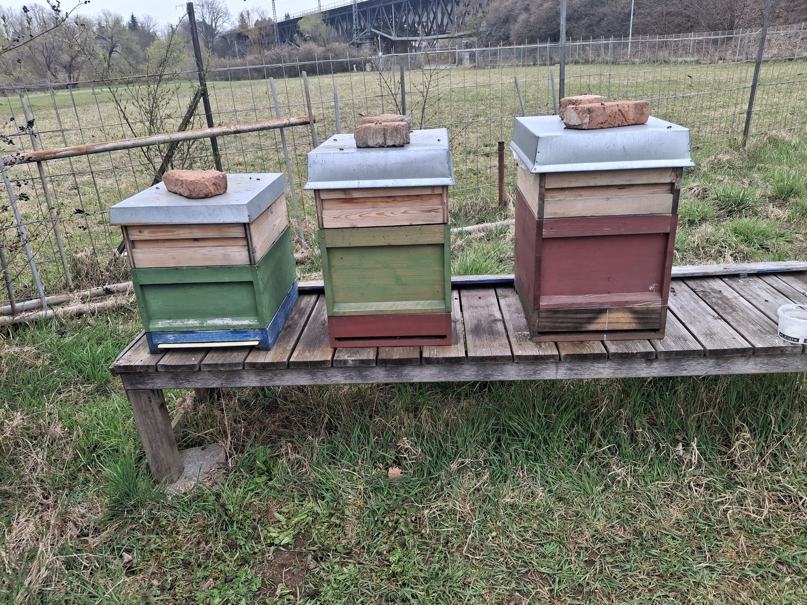
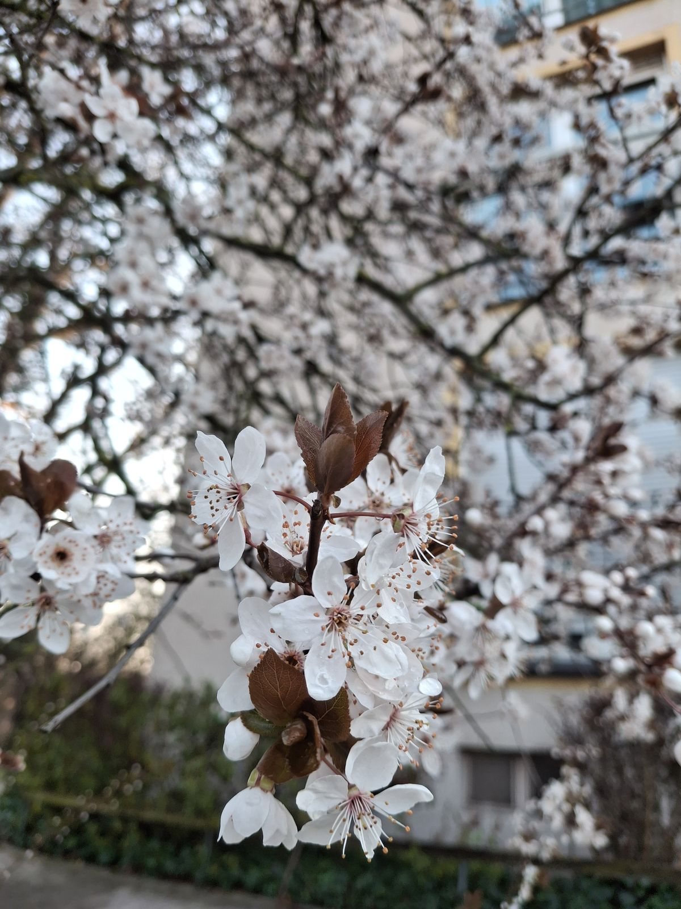
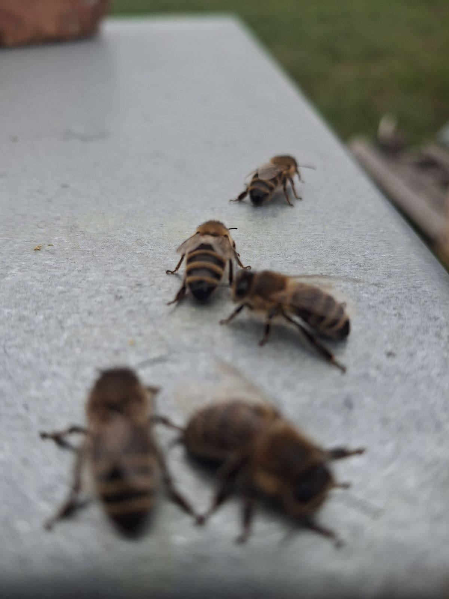

Fürth im Glas
Fräulein Irmela's Stadthonig kommt aus dem Pfarrgarten in Poppenreuth und aus dem Kulturgewächshaus an der Regnitz. Zu haben ist er am Gartenzaun in der Ritter-von-Aldebert-Straße.

Honig muss nicht von weit her kommen. Die Bienen, die Fräulein Irmela's Stadthonig sammeln, fliegen über Fürther Gärten, Parks, Friedhöfe, Bahndämme und Straßenbäume, also überall dorthin, wo in der Stadt etwas blüht. Heraus kommt ein Blütenhonig, der so vielfältig ist wie die Stadt, in der er entsteht.
Auf einen Blick
Fräulein Irmela's Stadthonig · Blütenhonig aus Fürth
500-g-Glas: 7 € (Grundpreis 14 € je kg)
Wo: Straßenverkauf vor der Ritter-von-Aldebert-Straße 14, 90766 Fürth
Wie: Glas nehmen, Geld direkt in die Geldkassette, fertig. Ich vertraue auf Ehrlichkeit.
Solange der Vorrat reicht. Fragen oder größere Mengen: Jens.Higgen@posteo.de
Warum Stadthonig spannender ist als Sortenhonig
Raps-, Sonnenblumen- oder Akazienhonig sind sogenannte Sortenhonige. Die Bienen stehen dafür an einem großen Feld oder Wald, in dem eine einzige Pflanze zur gleichen Zeit massenhaft blüht. Sie sammeln dann fast nur dort. Das Ergebnis ist verlässlich und wiedererkennbar: Rapshonig schmeckt in Mecklenburg ähnlich wie in Franken, und er schmeckt dieses Jahr so wie im letzten.
In der Stadt gibt es dieses eine große Feld nicht. Hier blüht auf kleinem Raum eine enorme Vielfalt, und zwar nicht gleichzeitig, sondern nacheinander, vom Vorfrühling bis in den Herbst. Typische Trachtpflanzen in der Stadt sind zum Beispiel:
- Frühjahr: Weiden, Ahorn, Kirschen, Äpfel, Pflaumen und andere Obstbäume in Hausgärten, dazu Zierkirschen und Frühblüher im Rasen
- Frühsommer: Rosskastanien, Robinien, Weißdorn, Brombeeren und Himbeeren an Hecken und Bahndämmen, Klee und Löwenzahn auf Wiesen und Grünstreifen
- Sommer: Linden als Straßen- und Parkbäume, Götterbaum und Schnurbaum, Lavendel, Kräuter und Stauden auf Balkonen und in Gärten
- Spätsommer und Herbst: Efeu an Mauern und Bäumen, Astern, Goldrute und Wildkräuter auf Brachflächen
Die Bienen eines Volkes sammeln in einem Umkreis von einigen Kilometern. Welche dieser Pflanzen gerade blühen, wie viel Nektar sie geben und was das Wetter zulässt, ändert sich von Woche zu Woche und von Jahr zu Jahr. Jeder Standort hat außerdem seine eigene Nachbarschaft aus Gärten, Bäumen und Brachen.
Deshalb ist die Zusammensetzung eines Stadthonigs einmalig. Kein Glas lässt sich exakt wiederholen: Ein Frühjahrshonig ist anders als ein Sommerhonig, Poppenreuth schmeckt anders als die Regnitzaue, und 2026 schmeckt anders als 2027. Farbe, Duft, Geschmack und die Neigung zum Kristallisieren können sich von Ernte zu Ernte unterscheiden. Ein Sortenhonig ist ein verlässlicher Klassiker. Ein Stadthonig ist eher ein Jahrgang, ein Abbild davon, was in einem bestimmten Sommer in einem bestimmten Viertel geblüht hat.
Woher der Honig kommt
Pfarrgarten Poppenreuth. Im historischen Pfarrgarten der Kirchengemeinde St. Peter und Paul stehen die meisten meiner Völker. Die Poppenreuther Kirche gilt als die älteste im Knoblauchsland. Das Pfarrhaus stammt von 1707, das Gartenhaus „Salettchen“ von 1763. Rund um den Garten liegen die Gemüse- und Obstflächen des Knoblauchslandes, gleich daneben beginnt die Stadt. Diese Mischung aus Land und Stadt ergibt ein abwechslungsreiches Blütenangebot.

Kulturgewächshaus Fürth. Auf dem Gelände der ehemaligen Traditionsgärtnerei Gumbmann an der Vacher Straße baut ein gemeinnütziger Verein einen Ort für urbane Landwirtschaft, Kunst und Kultur auf. Das Projekt hat 2022 den Zukunftspreis der Stadt Fürth erhalten. Meine Bienen stehen dort, wo früher Gärtner gearbeitet haben, und fliegen die Wiesen und Gehölze entlang der Regnitz an.

Ritter-von-Aldebert-Straße. Vor der eigenen Haustür ziehe ich junge Völker und Ableger auf. Hier lassen sie sich täglich beobachten und betreuen. Geerntet wird an diesem Stand nicht, aber er ist der Ort, an dem neue Völker heranwachsen, und der Ort, an dem es den Honig zu kaufen gibt.
Klein, ehrlich, aus der Nachbarschaft
Fräulein Irmela's Stadthonig kommt aus einer kleinen Hobbyimkerei mit wenigen Völkern. Jedes Glas ist von Hand abgefüllt. Wie viel es gibt, hängt davon ab, wie gut die Blüte war und wie die Bienen durch das Jahr gekommen sind. Wenn das letzte Glas weg ist, ist die Ernte des Jahres verkauft.

Also: Beim nächsten Spaziergang durch die Ritter-von-Aldebert-Straße einfach an der Hausnummer 14 vorbeischauen, ein Glas mitnehmen und sieben Euro in die Kassette legen. Fräulein Irmela und ihre Bienen sagen danke.